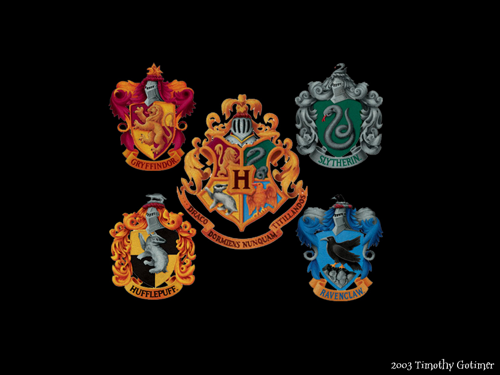

Hogwarts School of Witchcraft and Wizardry, commonly shortened to Hogwarts (/ˈhɒɡwɔːrts/), is a fictional British school of magic for students aged eleven to eighteen, and is the primary setting for the first six books in J. K. Rowling's Harry Potter series. Rowling has suggested that she may have inadvertently taken the name from the hogwort plant (Croton capitatus), which she had seen at Kew Gardens some time before writing the series, although the names "The Hogwarts" and "Hoggwart" appear in the 1954 Nigel Molesworth book How to Be Topp by Geoffrey Willans. Hogwarts school was voted as the 36th best Scottish educational establishment in a 2008 online ranking, outranking Edinburgh's Loretto School. According to a director of the Independent Schools Network Rankings, it was added to the schools listing "for fun" and was then voted on.

Hogwarts Founders
The Hogwarts founders, also known as the Hogwarts Four, were four witches and wizards who established Hogwarts School of Witchcraft and Wizardry during the medieval era, in the 10th century. These four founders are widely described as being the most brilliant witches and wizards of the time and were the following: Godric Gryffindor, Helga Hufflepuff, Rowena Ravenclaw and Salazar Slytherin. Each of them created their own House: Gryffindor, Hufflepuff, Ravenclaw and Slytherin respectively. They laid the foundations for the largest and most prestigious Wizarding school in Britain.
